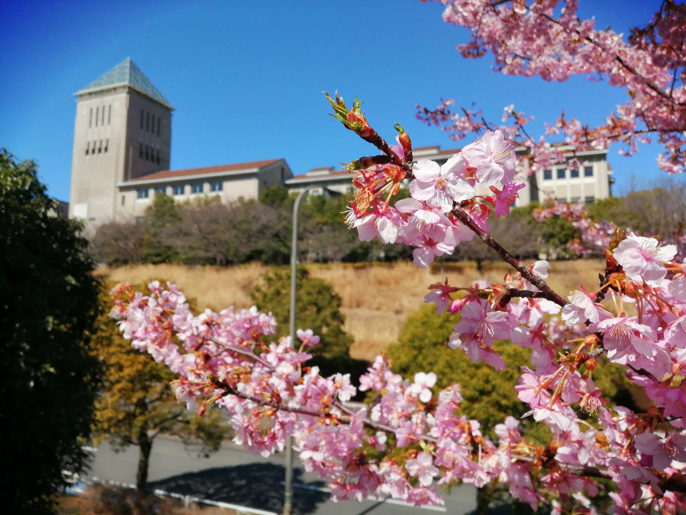

東京都立大学新歓サイト2021
新歓イベント一覧
スマホをお使いの場合、表は横にスクロールします。文字に蛍光が引かれているものは新2年生も参加可能です。| 日にち | イベント | 場所 | 時間 | 主催 |
|---|---|---|---|---|
| 3/24 (水) 3/25 (木) 3/26 (金) |
新入生歓迎講演会 | オンライン | 10:30~12:00 | 学生自治会 |
| 生協オリエンテーション | オンライン | 12:45~17:00 | 生協学生委員会 | |
| 4/5 (月) 4/6 (火) |
クラスオリエンテーション | オンライン | クラス毎に異なる | 新歓委員会 |
| 4/10 (土) 4/11 (日) |
体育会オンライン新歓 | オンライン | 10:00~17:00 | 体育会 |
| 4/15 (木) | 文連オリエンテーション | オンライン | 17:00~20:00 | 文化部連合 |
| 4/15 (木) 4/21 (水) 4/24 (土) 4/27 (火) |
談話新歓 | オンライン | 20:00~21:30 | 大学祭実行委員会 |
| 4/18 (日) | サークル紹介 | オンライン | 11:00~16:00 | 中央新歓 |
掲載団体索引
あ〜き
く〜すいそ
推理〜B類バド
B類バレ〜わ
サイト更新
- 4/1：企画「サークル紹介」について
- 3/28：クラスオリエンテーションについて
- 3/22：二年生の参加について追記
- 3/21：検索欄追加
- 3/21：Circle Introduction
- 3/13：中央新歓と当Webについて
- 3/12：体育会について記載
- 3/11：文連オリエンテーションについて変更
- 3/9：Twitter追加
- 3/8：学生自治会、大学祭について記載
- 公開：2/23（火）
謝辞:3/1
当Webサイトを作るには様々な協力と善意がなければ、作り得なかったでしょう。
とりわけ、このテンプレートを作ったErwin Aligam氏に多大なる感謝をお送りしたいです。
また、Githubで検索欄のプルリクを送ってくださった方もありがとうございます。
サークル紹介のページを公開するまではもう少々時間をいただきたく。
おそらく、最初で最後のhtml、css、javascriptで書かれた新入生歓迎Webサイトですので、ご期待いただければと思います。
当Webサイトが皆さんが大学生活の中での一歩を少しでも後押しできれば嬉しいです。
皆さんの大学生活に幸多きことを祈っております。